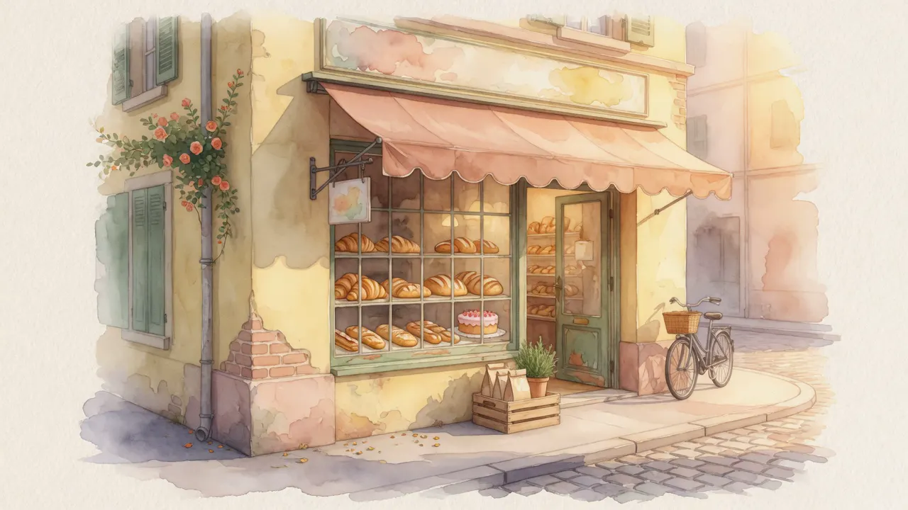
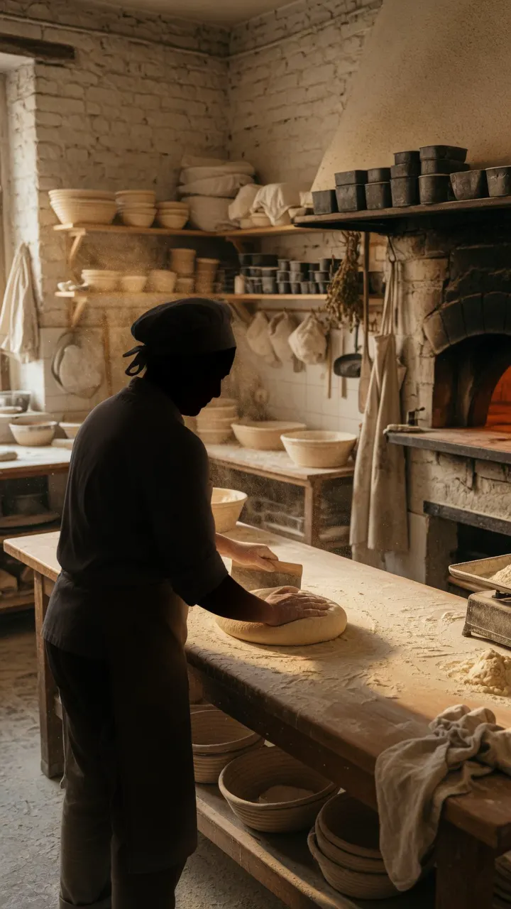
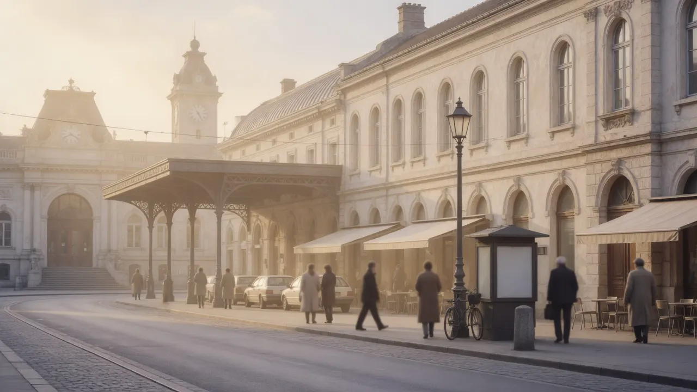

Le lieu et les frères Moncozet
Une maison installée dans un lieu qui travaille depuis longtemps
Il y a plus de cent ans de boulangerie au Boulevard de Grancy 26. Monco’Pain y est installé depuis 2021, porté par les frères Moncozet.


Cent ans à la même adresse
Plus d’un siècle de boulangerie ici
Le chiffre parle du lieu, pas d’une généalogie inventée. Depuis plus de 100 ans, une boulangerie y a eu sa place. La continuité se lit dans l’usage : une adresse où l’on vient chercher du pain, le matin comme en fin de journée.
Le coup de foudre pour un fournil
Les frères Moncozet ont eu un coup de foudre pour cette adresse et y ont créé Monco’Pain en 2021. Ce choix donne une direction simple : faire vivre un atelier et une boutique dans un quartier qui les connaît déjà.
Visuel d’illustration : ne représente pas un membre identifiable de l’équipe.

Une équipe et un quartier
Plus de dix artisans, un même rythme
Plus de dix artisans travaillent dans la maison. Entre le fournil et la boutique, les horaires se croisent : il faut préparer tôt, cuire, garnir la vitrine, accueillir, recommencer. La précision se construit collectivement.
Métro Grancy à 25 mètres, gare CFF / M2 Gare à 100 mètres : l’adresse est à la fois sur un trajet et dans une habitude de quartier.